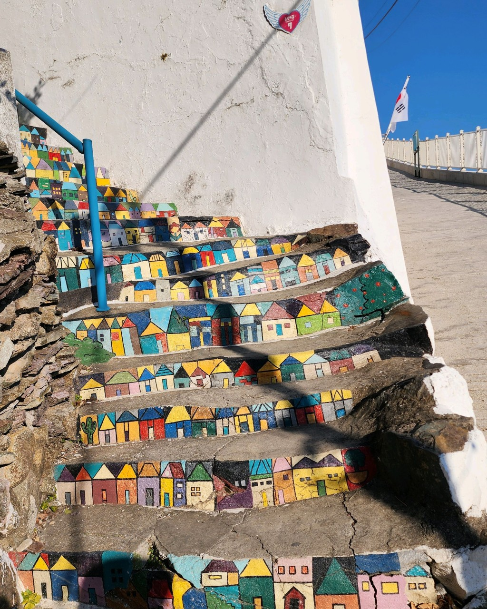
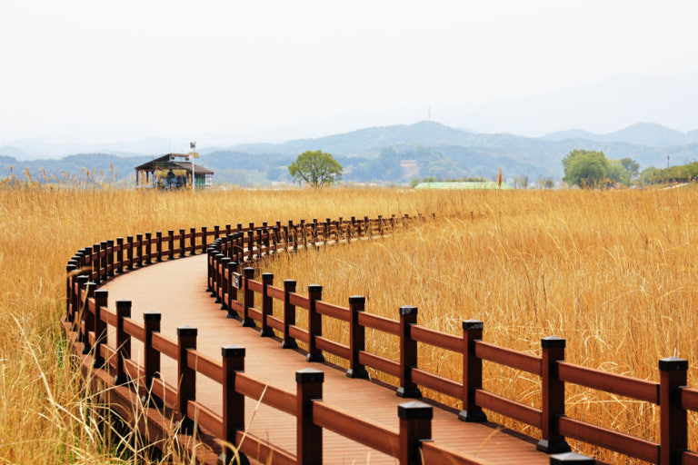
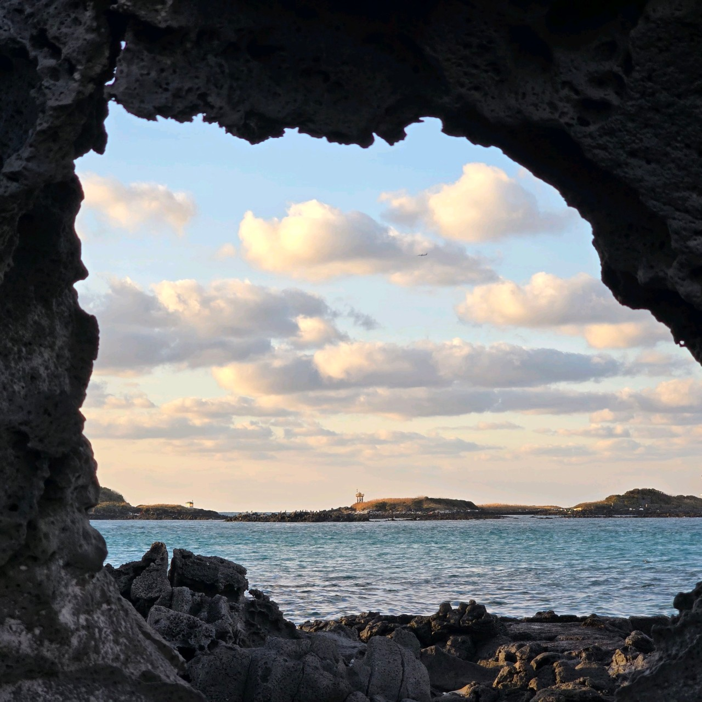

PHOTO
고소동 벽화 마을
고소동 벽화 마을은 여수에서 가장 오래된 마을로
언덕에 자리하고 있어 멋진 바다를 볼 수 있는 마을입니다.
여수하면 떠오르는 주제들을 벽화로 그려놓은 마을이라
어디서 찍어도 사진이 잘 나오는 포토스팟이다.
남대천 생태공원
남대천 생태 공원은 갈대와 물억새 등이 서식하는 곳으로
산책로도 잘 조성되어 있어 갈대 사이를 산책하거나 사진을 찍고
전동 보트를 타며 상태공원을 구경할 수 있습니다.
창꼼바위
창꼼바위는 파도에 깎여 만들어진 독특한 바위로
바위틈 사이로 보이는 바다가 감탄이 절로 나오게 만드는
제주의 자연 포토스팟 입니다.